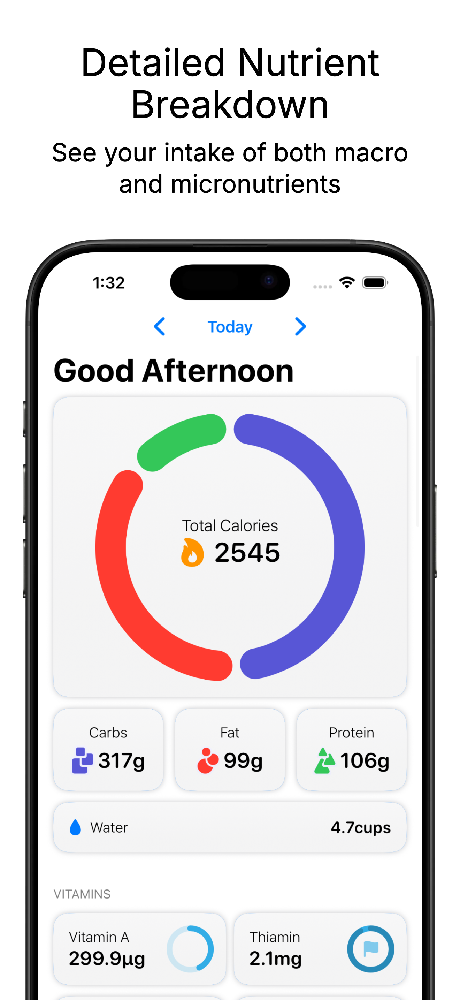
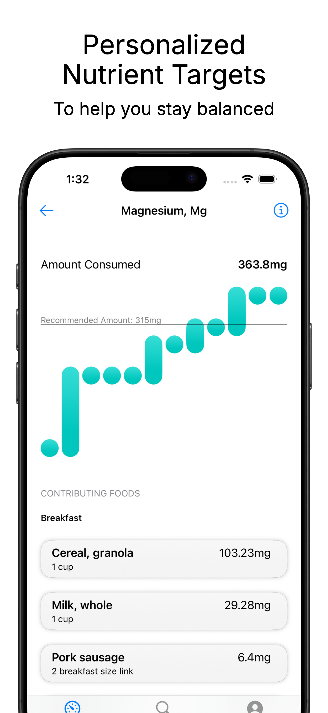
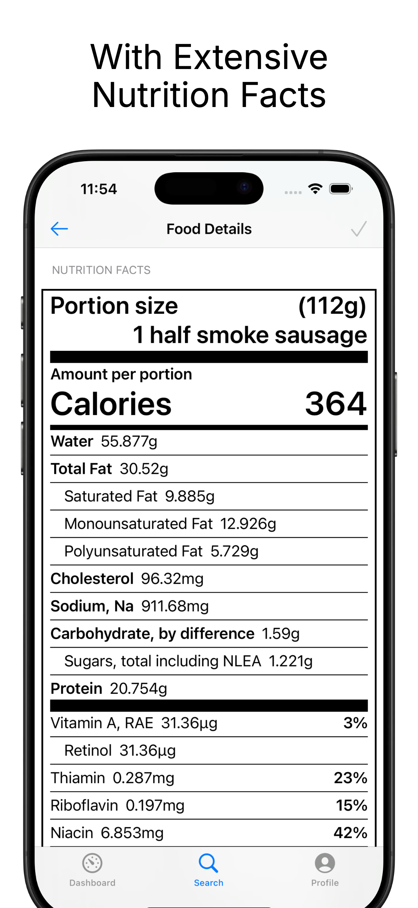
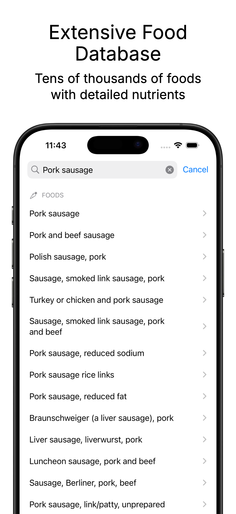

★★★★★
“Free and great insight about vitamin and mineral intake.”— SoaresEM
Your data never leaves your device.

See your daily intake of both macro and micronutrients, from protein and fiber to magnesium and vitamin B12.
Scan any packaged food to instantly pull in its nutrition data. No subscription required.
Search from tens of thousands of USDA-sourced foods, including whole ingredients and packaged items.
Add your own foods when you can't find what you need. Nothing stops you from logging.
Group foods you eat together often and save them for faster, smarter logging.
Set your own calorie, macro, and micronutrient goals — or use recommended daily values based on your age and sex.
Discover what each nutrient does for your body and why it matters to your overall health.



Most trackers stop at calories, protein, carbs, and fat. Nutrient Logger breaks down 80+ nutrients so you can spot gaps before they become deficiencies.
Your food log never leaves your device. No cloud accounts, no data harvesting, no login required.
No full-screen video ads that hijack your logging. The free version includes small, non-intrusive ads. Premium removes them entirely.
“Free and great insight about vitamin and mineral intake.”— SoaresEM
“I love this app, very user friendly and thorough!”— Kathrynnn G
“This is great for people who are trying to get the right nutrients into their diet.”— Njoynlife66